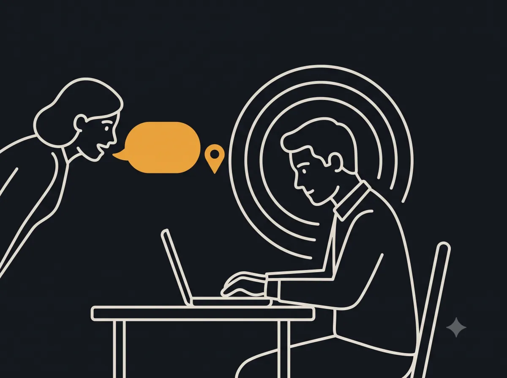
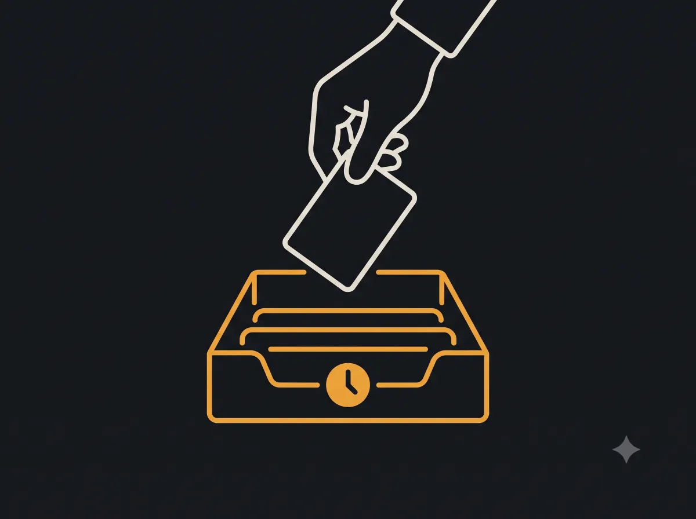
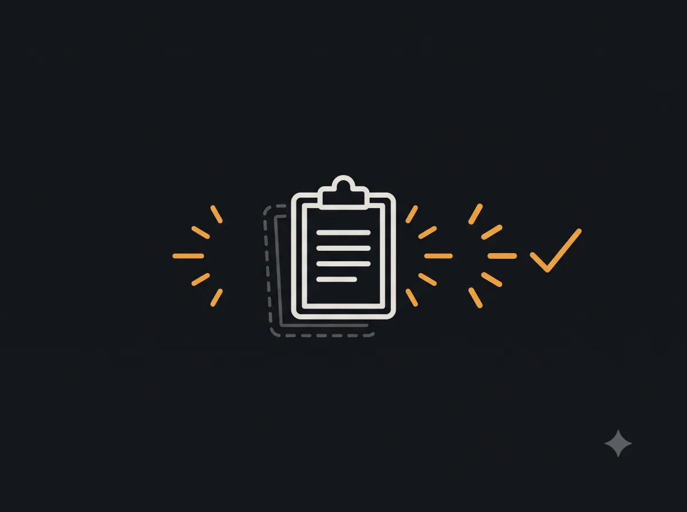

Coworker asks mid-task
Catch it before it evaporates. Two taps, back to work.
Coworker pings, boss drops a task, you're mid-focus. Two taps to catch it, then reminders on repeat.
Download the beta (APK)Android only · free beta · sideload the APK

Catch it before it evaporates. Two taps, back to work.

Park it. Get nagged at the right interval.

A bit becomes never. Kept in front of you until done.
Grab the beta and start catching every ask.
Download the beta (APK)Android only · free while in beta · you may need to allow install from unknown sources.
To-do apps remind once. intervval keeps nagging until it's done.
Exact alarms + foreground service so nags don't silently die.
Yes for now. Android first, where reliable background reminders are strongest.
Download it, tap the file, and allow install from unknown sources if your phone asks. It is a free beta.